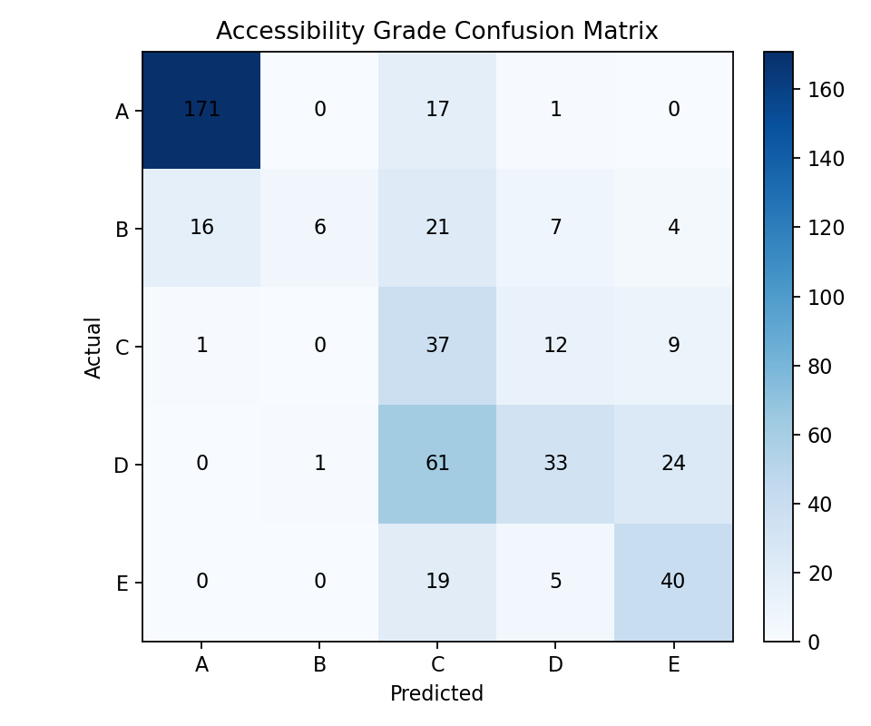
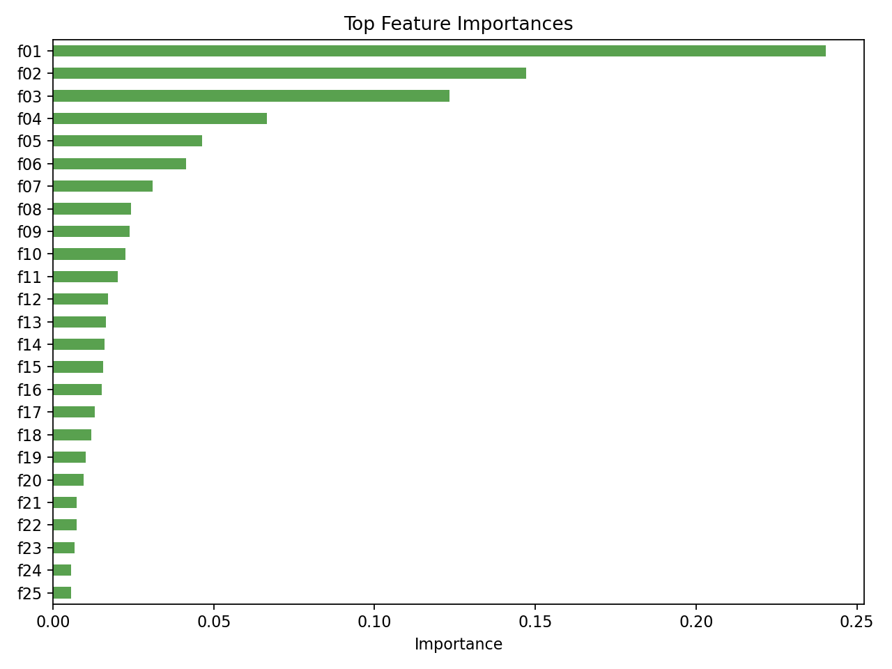

장애인 접근성 등급 진단 모델 구현 결과 v3.1
생성 시각: 2026-06-13T10:01:54.415595+09:00
실행 환경: conda env pronii
검증 방식: Stratified 5-Fold Cross Validation
최종 모델: ExtraTreesClassifier / macro F1 평균: 0.4733 / 표준편차: 0.0551 / OOF macro F1: 0.4780
v3.1 핵심 변경점: `pronii` 환경에서 XGBoost와 LightGBM까지 포함해 5-fold 검증을 다시 수행했다.
v3.1 핵심 기준. 공연장 규모 분류
`venue_type`은 공연장명을 기준으로 확정한 규모 라벨이다. K-fold 모델에서도 이 값을 범주형 feature로 사용한다.
| 규모 라벨 | 공연장 | 행 수 |
|---|
| 대형 | CJ 토월극장 (21건), 오페라극장 (40건), 콘서트홀 (216건) | 277 |
| 중형 | IBK기업은행챔버홀 (1건), 리사이틀홀 (122건) | 123 |
| 소극장/소형 | 인춘아트홀 (70건), 자유소극장 (15건) | 85 |
Step 1. 데이터셋 기준 확정
입력 파일
- 원본: `data/raw/ap_whellchair_hall_total.csv`
- 전처리 결과: `data/processed/accessibility_dataset.csv`
데이터 크기
| 항목 | 값 |
|---|
| 원본 행 수 | 500 |
| 전처리 후 행 수 | 485 |
| 전처리 후 컬럼 수 | 26 |
제외 행 요약
- 제외 행 수: `15`행
- 제외 이유: 새 metric의 분모인 `overall_booking_rate = paid_audience_count / total_seats`가 0이 되면 `wheelchair_booking_rate = wheelchair_booking_rate_raw / overall_booking_rate`를 정의할 수 없다.
- 이번 데이터에서 제외된 15개 행은 모두 `paid_audience_count <= 0`, 즉 `유료입장객수 = 0`인 공연이다.
제외 사유별 건수
| 제외 사유 | count |
|---|
| paid_audience_count <= 0 | 15 |
제외된 공연 목록
| raw_index | title | start_date | venue | genre | paid_audience_count | wheelchair_booking_count | total_seats | wheelchair_seats | 제외 사유 |
|---|
| 10 | 2023 대원문화재단 신년음악회 | 2023-01-07 | 콘서트홀 | 교향곡 | 0 | 25 | 2505 | 24 | paid_audience_count <= 0 |
| 31 | 2024 IBK음악회 | 2024-10-16 | 콘서트홀 | 클래식 | 0 | 24 | 2505 | 24 | paid_audience_count <= 0 |
| 40 | 2024 서울시향 크리스티안 테츨라프의 브람스 바이올린 협주곡 ① | 2024-09-05 | 콘서트홀 | 교향곡 | 0 | 4 | 2505 | 24 | paid_audience_count <= 0 |
| 42 | 2024 신년음악회 | 2024-01-09 | 콘서트홀 | 클래식 | 0 | 20 | 2505 | 24 | paid_audience_count <= 0 |
| 50 | 2024 예술의전당 회원음악회 | 2024-09-07 | 콘서트홀 | 클래식 | 0 | 1 | 2505 | 24 | paid_audience_count <= 0 |
| 51 | 2024 장애인식개선을 위한 하트 투 하트 콘서트 | 2024-11-19 | 콘서트홀 | 클래식 | 0 | 48 | 2505 | 24 | paid_audience_count <= 0 |
| 60 | IBK 음악회 with 조수미 & 서혜경 월드 클래식 | 2023-09-08 | 콘서트홀 | 크로스오버 | 0 | 24 | 2505 | 24 | paid_audience_count <= 0 |
| 217 | 못 말리는 프랑켄슈타인 | 2024-04-24 | CJ 토월극장 | 연극 | 0 | 20 | 1004 | 10 | paid_audience_count <= 0 |
| 264 | 서강은 피아노 독주회 | 2023-11-10 | 인춘아트홀 | 독주 | 0 | 2 | 100 | 2 | paid_audience_count <= 0 |
| 270 | 소프라노 노정애 독창회 | 2024-04-12 | 인춘아트홀 | 클래식 | 0 | 2 | 100 | 2 | paid_audience_count <= 0 |
| 378 | 장애인식개선을 위한 <하트 투 하트 콘서트> | 2023-08-29 | 콘서트홀 | 클래식 | 0 | 24 | 2505 | 24 | paid_audience_count <= 0 |
| 392 | 제14회ARKO한국창작음악제(양악부문) | 2023-02-01 | 콘서트홀 | 교향곡 | 0 | 4 | 2505 | 24 | paid_audience_count <= 0 |
| 393 | 제15회ARKO한국창작음악제(양악부문) | 2024-02-06 | 콘서트홀 | 교향곡 | 0 | 8 | 2505 | 24 | paid_audience_count <= 0 |
| 399 | 조성진 삼성호암상 수상기념 리사이틀 | 2024-06-18 | 콘서트홀 | 클래식 | 0 | 24 | 2505 | 24 | paid_audience_count <= 0 |
| 467 | 한국예술종합학교 음악원 개원30주년 기념음악회 | 2023-04-12 | 콘서트홀 | 교향곡 | 0 | 48 | 2505 | 24 | paid_audience_count <= 0 |
사용 원천 컬럼
- 공연 정보: `제목`, `공연시작일`, `공연종료일`, `장르`, `구분`, `공연장`, `대관 기업명`
- 좌석/예매 정보: `유료입장객수`, `휠체어석예매수`, `total/총좌석수`, `일반석`, `장애인석`
전처리 수행 내용
| 전처리 항목 | 내용 |
|---|
| 컬럼 표준화 | `제목`, `공연시작일`, `공연종료일`, `집계최초일자`, `장르`, `구분`, `공연장`, `대관 기업명`, `유료입장객수`, `휠체어석예매수`, `총좌석수`, `일반석`, `장애인석`을 영문 컬럼명으로 변경 |
| 타입 변환 | `start_date`, `end_date`, `first_booking_date`는 날짜형으로 변환하고, 좌석/예매 수 컬럼은 숫자형으로 변환 |
| 유효 행 필터링 | 날짜, 유료입장객수, 휠체어석예매수, 총좌석수, 장애인석이 결측인 행을 제외하고 `wheelchair_seats > 0`, `total_seats > 0`, `paid_audience_count > 0` 조건만 유지 |
| 텍스트 정리 | `genre`, `organizer_type`, `organizer`, `venue`의 결측/빈 문자열을 `unknown`으로 채우고 앞뒤 공백 제거 |
| 범주 매핑 | 세부 장르를 `genre_group`으로 정규화하고, 공연장명을 기준으로 `venue_type`을 대형/중형/소극장/기타로 매핑 |
| 날짜 파생변수 | `year`, `month`, `day_of_week`, `is_weekend`, `duration_days`, `booking_lead_days` 생성 |
| 예매율 파생변수 | `wheelchair_booking_rate_raw = wheelchair_booking_count / wheelchair_seats`, `overall_booking_rate = paid_audience_count / total_seats`, `wheelchair_booking_rate = wheelchair_booking_rate_raw / overall_booking_rate` 생성 |
| 좌석 비율 파생변수 | `wheelchair_seat_ratio = wheelchair_seats / total_seats` 생성 |
| 타겟 라벨링 | 보정 예매율 `wheelchair_booking_rate`를 A~E 구간으로 나누어 `accessibility_grade` 생성 |
| 출력 정렬 | `start_date`, `title` 기준으로 정렬한 뒤 `data/processed/accessibility_dataset.csv`로 저장 |
결측치 점검
| column | missing |
|---|
| title | 0 |
| start_date | 0 |
| end_date | 0 |
| year | 0 |
| month | 0 |
| day_of_week | 0 |
| is_weekend | 0 |
| duration_days | 0 |
| booking_lead_days | 0 |
| genre | 0 |
| genre_group | 0 |
| venue | 0 |
| venue_type | 0 |
| organizer_type | 0 |
| organizer | 0 |
| start_time | 0 |
| paid_audience_count | 0 |
| wheelchair_booking_count | 0 |
| total_seats | 0 |
| general_seats | 0 |
| wheelchair_seats | 0 |
| wheelchair_seat_ratio | 0 |
| wheelchair_booking_rate_raw | 0 |
| overall_booking_rate | 0 |
| wheelchair_booking_rate | 0 |
| accessibility_grade | 0 |
Step 2. 타겟 라벨 설계
타겟 변수
- 타겟: `accessibility_grade`
- 기준값: `wheelchair_booking_rate = (wheelchair_booking_count / wheelchair_seats) / (paid_audience_count / total_seats)`
- 해석: 전체 예매율 대비 휠체어석 예매율. `1.0`이면 전체 좌석 예매율과 휠체어석 예매율이 같은 수준이다.
등급 기준
| 등급 | 기준 |
|---|
| A | `wheelchair_booking_rate >= 1.00` |
| B | `0.50 <= wheelchair_booking_rate < 1.00` |
| C | `0.25 <= wheelchair_booking_rate < 0.50` |
| D | `0.10 <= wheelchair_booking_rate < 0.25` |
| E | `wheelchair_booking_rate < 0.10` |
기존 `wheelchair_booking_count / wheelchair_seats` 방식은 장기 공연에서 공연 회차/기간 효과가 크게 반영되어 값이 과도하게 커질 수 있었다.
따라서 전체 예매율로 한 번 더 나눈 상대 예매율을 기준으로 라벨링했다.
등급별 샘플 수
| accessibility_grade | count |
|---|
| A | 189 |
| B | 54 |
| C | 59 |
| D | 119 |
| E | 64 |
예매율 요약
| value |
|---|
| count | 485.0 |
| mean | 1.8491404516428849 |
| std | 5.7195291368038 |
| min | 0.010128773749074131 |
| 25% | 0.15654145995747698 |
| 50% | 0.5034973468403281 |
| 75% | 2.058139534883721 |
| max | 104.375 |
Step 3. Feature Engineering
Feature 목록
| feature | 설명 | 사용 |
|---|
| booking_lead_days | 공연시작일 - 집계최초일자. 현재 데이터에서는 전체 값이 0인 상수 컬럼 | 학습 제외 |
| genre_group | 장르 정규화 결과 | 학습 |
| venue_type | 공연장명 기준 대형/중형/소극장 매핑 | 학습 |
| is_weekend | 공연시작일 기준 주말 여부 | 학습 |
| duration_days | 공연종료일 - 공연시작일 + 1 | 학습 |
| organizer_type | 기획 주체. 대관/기획 등 | 학습 |
| organizer | 대관 기업 또는 기획 주체명 | 학습 |
| start_time | 현재 원천 파일에 시간이 없어 0으로 고정한 상수 placeholder | 학습 제외 |
| paid_audience_count | 전체 유료입장객 수. 전체 예매율 산출에 직접 사용 | 학습 제외 |
| wheelchair_booking_count | 휠체어석 예매 수. 타겟 산출에 직접 사용 | 학습 제외 |
| total_seats | 공연장 전체 좌석 수 | 분석/대시보드용. 학습 제외 |
| general_seats | 일반 판매석 수 | 분석/대시보드용. 학습 제외 |
| wheelchair_seats | 장애인석 수. 휠체어석 예매율 산출의 분모 | 분석/대시보드용. 학습 제외 |
| wheelchair_seat_ratio | 전체 좌석 중 휠체어석 비율 | 분석/대시보드용. 학습 제외 |
| wheelchair_booking_rate_raw | 휠체어석예매수 / 장애인석. 보정 전 예매율 | 학습 제외 |
| overall_booking_rate | 유료입장객수 / 총좌석수. 전체 예매율 | 학습 제외 |
| wheelchair_booking_rate | 전체 예매율 대비 휠체어석 예매율. 타겟 라벨 산출값 | 학습 제외 |
학습에서 제외한 좌석 정보
`booking_lead_days`, `start_time`은 현재 데이터에서 모든 값이 0인 상수 컬럼이라 학습 feature에서 제외한다.
`paid_audience_count`, `wheelchair_booking_count`, `total_seats`, `general_seats`, `wheelchair_seats`, `wheelchair_seat_ratio`, `wheelchair_booking_rate_raw`, `overall_booking_rate`, `wheelchair_booking_rate`는 접근성 등급 산출에 직접 연결되거나 좌석 수 신호가 강한 값이라 모델이 공연 특성 대신 사후 예매/좌석 정보를 보고 맞추는 문제가 생길 수 있어 제외한다.
주요 범주 분포
장르 그룹
| genre_group | count |
|---|
| 클래식 | 397 |
| 오페라 | 21 |
| 발레 | 16 |
| 뮤지컬 | 15 |
| 연극 | 14 |
| 기타 | 9 |
| 기타(복합) | 6 |
| 이벤트콘서트 | 5 |
| 무용 | 2 |
공연장 규모
| venue_type | count |
|---|
| 대형 | 277 |
| 중형 | 123 |
| 소극장 | 85 |
Step 4. 접근성 등급 분류 모델 v3.1: K-Fold 검증
문제 정의
- 문제 유형: 다중 분류
- 타겟 변수: `accessibility_grade`
- 등급: A~E
- 주 평가 지표: macro F1
K-Fold 적용 이유
전체 데이터가 500행으로 많지 않기 때문에 단일 train/test split만 사용하면 특정 검증 세트 구성에 결과가 흔들릴 수 있다. v3.1에서는 `pronii` conda 환경에서 `StratifiedKFold(n_splits=5)`를 적용했고, XGBoost와 LightGBM 후보까지 포함했다.
학습 Feature
| feature |
|---|
| genre_group |
| venue_type |
| is_weekend |
| duration_days |
| organizer_type |
| organizer |
학습 제외 컬럼
아래 컬럼은 좌석 수 또는 타겟 산출에 직접 연결되는 값이므로 모델 feature에서 제외했다.
| excluded_column |
|---|
| paid_audience_count |
| wheelchair_booking_count |
| total_seats |
| general_seats |
| wheelchair_seats |
| wheelchair_seat_ratio |
| wheelchair_booking_rate_raw |
| overall_booking_rate |
| wheelchair_booking_rate |
등급 분포
| count |
|---|
| A | 189 |
| B | 54 |
| C | 59 |
| D | 119 |
| E | 64 |
검증 방식
- 실행 환경: conda env `pronii`
- 방식: stratified 5-fold cross validation
- n_splits: 5
- shuffle: true
- random_state: 42
- fold별 학습 행 수: 400
- fold별 검증 행 수: 100
모델 비교
| model | accuracy_mean | accuracy_std | f1_macro_mean | f1_macro_std | oof_f1_macro |
|---|
| ExtraTreesClassifier | 0.5918 | 0.0383 | 0.4733 | 0.0551 | 0.478 |
| XGBoostClassifier | 0.6289 | 0.0326 | 0.4532 | 0.0419 | 0.4608 |
| RandomForestClassifier | 0.5794 | 0.0329 | 0.4444 | 0.0469 | 0.4471 |
| DummyClassifier | 0.3897 | 0.0046 | 0.1122 | 0.001 | 0.1122 |
최종 선택 모델
- 모델: `ExtraTreesClassifier`
- 선택 기준: fold별 macro F1 평균이 가장 높은 후보
- macro F1 평균: `0.4733`
- macro F1 표준편차: `0.0551`
- OOF macro F1: `0.4780`
- 저장 경로: `artifacts/accessibility_classifier_kfold_v31.joblib`
- 메트릭 저장 경로: `reports/accessibility/accessibility_metrics_kfold_v31.json`
최종 모델 Fold별 결과
| fold | train_rows | validation_rows | accuracy | f1_macro |
|---|
| 1.0 | 388.0 | 97.0 | 0.5361 | 0.3937 |
| 2.0 | 388.0 | 97.0 | 0.6082 | 0.4928 |
| 3.0 | 388.0 | 97.0 | 0.5979 | 0.5178 |
| 4.0 | 388.0 | 97.0 | 0.6392 | 0.5219 |
| 5.0 | 388.0 | 97.0 | 0.5773 | 0.4405 |
상위 Feature Importance
| rank | feature | importance |
|---|
| f01 | cat__venue_type_대형 | 0.24028373914024417 |
| f02 | cat__venue_type_중형 | 0.14713587963034785 |
| f03 | cat__genre_group_클래식 | 0.1232469065645181 |
| f04 | cat__venue_type_소극장 | 0.0665435521902061 |
| f05 | num__duration_days | 0.04641221057663546 |
| f06 | cat__genre_group_발레 | 0.04143790522559384 |
| f07 | cat__genre_group_연극 | 0.03106934593904928 |
| f08 | cat__organizer_지클레프 | 0.024260198616322524 |
| f09 | cat__genre_group_뮤지컬 | 0.02393193139186061 |
| f10 | cat__organizer_예인예술기획 | 0.022530763444511645 |
산출물
- 혼동행렬: `reports/accessibility/accessibility_confusion_matrix_kfold_v31.png`
- Feature importance CSV: `reports/accessibility/accessibility_feature_importance_kfold_v31.csv`
- Feature importance 이미지: `reports/accessibility/accessibility_feature_importance_kfold_v31.png`
시각화 산출물
등급 분포

K-Fold OOF 혼동행렬

Feature Importance
